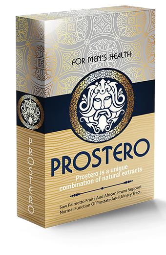

Direktur Pusat prostat dan onkologi, Anggota Presidium dari Perguruan Tinggi Urologi, profesor dan ahli bedah di Eropa dan Amerika Serikat. Lakukan operasi berikut: Prostatektomi radikal dengan menggunakan robot TURP (reseksi transurethral kelenjar prostat) prostat dan ablasi laser adenoma prostat .
prostatitis membawa berbagai masalah bagi seseorang, seperti berikut:
● IMPOTENSI
● HYPERPLASIA PROSTATIK
● KANKER PROSTAT

Berita buruknya adalah bahwa pada 96,7% kasus, pria yang menderita prostatitis cepat atau lambat akan menyakiti impotensi .
Kanker prostat terjadi pada tahap akhir peradangan kelenjar prostat, menjadi hasil keseluruhan setelah tidak dirawat prostatitis. Pria yang mengabaikan prostatitis sebenarnya mempertaruhkan kehidupan mereka. Jika Anda ingin menjalani hidup yang panjang dan sehat, jika Anda memerlukan ereksi yang tepat dan libido normal, Anda perlu mengobati peradangan prostat . Dan ini harus dilakukan secepat mungkin.
masalahnya adalah meskipun sebagian besar orang yang tertarik dengan masalah ini, mereka tetap tidak pergi ke dokter. Ini semua karena beberapa dari mereka tidak menganggap peradangan kelenjar prostat sebagai fenomena berbahaya, dan memperlakukan masalah ini seolah-olah itu sesuatu yang memalukan dan mereka ingin menyembunyikannya. Akibatnya, sebagian besar pasien lupa tentang penyakit tanpa perawatan yang tepat, dan ketika mereka sudah memutuskan untuk mencari bantuan (jika ini terjadi), seringkali sudah terlambat dan kanker sudah mulai berkembang.
Harus dipahami bahwa prostatitis ini adalah penyakit mematikan yang dapat merosot dan menyebabkan tumor kanker. Penyakit yang tidak diobati dan tidak terkontrol berkembang dengan cepat dan dapat menyebabkan kanker hanya dalam 1-2 tahun dan sering menyebabkan kematian pasien.
Sekarang pria memiliki kesempatan unik untuk mencegah dan mengobati pembesaran prostat dan peradangan selamanya - bahkan tanpa kunjungan rutin ke klinik.
Pada tahun 2016, sebuah produk revolusioner muncul di pasar yang dengan cepat mengembalikan fungsi kelenjar prostat, menghilangkan peradangan, dan membantu dengan prostatitis bahkan jika ia sudah kronis, dan juga meningkatkan kekuatan pria dan durasi hubungan seksual. Produk alami ini bernama ProstEro . Ini adalah produk yang mudah dan sederhana, Anda dapat menggunakannya di mana pun Anda berada, dan sepenuhnya tersedia bagi siapa pun. Proyek dan penelitian berlangsung dua tahun dan dilakukan oleh dokter AS.
Tahun ini, Asosiasi Dokter dan Ahli Bedah berhasil menyelesaikan uji klinis dari produk generasi baru ProstEro , yang diciptakan untuk membantu mengobati prostatitis melalui cara yang paling efektif. Pernyataan berikut diterbitkan oleh layanan pers Institut:
1. ProstEro terbukti efektif pada 98% kasus. Persentase diukur dengan menggunakan metode standar (jumlah pria yang sepenuhnya pulih dibandingkan dengan jumlah total pasien dalam kelompok 100 pria yang menerima terapi).
2. Dalam 96% kasus, setelah menghentikan terapi, tidak ada sama sekali gejala penyakit (persentase yang diperoleh berdasarkan pengamatan yang dilakukan dalam waktu enam bulan).
3. Setelah seminggu menggunakan obat, semua pasien melihat peningkatan yang signifikan dalam libido dan kekuatan pria.
4. Dalam 95% kasus terjadi peningkatan durasi hubungan seksual.
5. Tidak ada efek samping atau reaksi alergi yang terlihat.
6. ProstEro terbukti sebagai produk revolusioner dan harus diakui sebagai salah satu alat utama untuk memerangi prostatitis.

Pengalaman kerja adalah 18 tahun. Dia sangat terkenal di dunia, karena dia adalah ahli bedah terbaik dalam operasi sistem kemih, termasuk invasif minimal.
Anggota Perhimpunan Urologi, Asosiasi Onkologi Urologi, dan Asosiasi Urologi Amerika (AAU).
Untuk waktu yang lama di negara kita tidak ada solusi efektif, tetapi di atas semua solusi yang tersedia untuk pengobatan prostatitis, dan ini telah menyebabkan akibat yang sangat mengerikan. Penyakit ini telah berkembang pada 45% populasi orang dewasa, dan bahkan lebih buruk lagi pada 25% orang muda. ProstEro Ini adalah revolusi dalam pengobatan prostatitis, obat mujarab nyata. Efektivitas tetes telah dibuktikan dalam amalan di Amerika Serikat dan Eropa. Komposisi unik dan penemuan sel-sel hidup oleh para ilmuwan dibuat ProstEro sangat diperlukan dalam memerangi prostatitis.

Produk diuji dan hasilnya luar biasa. Hampir 98% dari semua pasien sembuh, dan penyakitnya tidak kembali. Dan gejalanya hilang sepenuhnya, seperti halnya peradangan pada kelenjar prostat. Dalam kasus kekambuhan, setelah penggunaan ProstEro lebih lanjut, gejalanya hilang selamanya.
Selain itu, berkat kompleks dari bahan-bahan alami yang kuat, ProstEro meningkatkan kekuatan pria dan memperpanjang durasi hubungan seksual.
ProstEro ini adalah metode yang sangat efektif, karena memecahkan masalah di semua tahap. Ini memiliki efek terapi yang belum pernah terjadi sebelumnya untuk seluruh sistem genitourinari pria. Dengan kata-kata sederhana, setelah kursus produk alami ini, tubuh laki-laki mulai bekerja dengan cara yang sama seperti seorang pria muda berusia 25 tahun. Itu sebabnya saya sangat merekomendasikannya untuk semua pria. Bahkan ketika tidak ada prostatitis pengobatan dengan obat ini adalah pencegahan yang sangat baik dan bantuan bagi kekuatan pria .
Selain itu, produk lulus semua ujian untuk mendapatkan sertifikat paling penting. Ujian klinis telah sepenuhnya mengkonfirmasi efektivitas produk.
Para lelaki terkasih, jangan abaikan kesehatan Anda. Jangan menghakimi diri sendiri karena tidak berdaya dan jangan membahayakan diri sendiri! PERLU MENJAGA KESEHATAN ANDA!
Saat ini, ProstEro ortogonal hanya dapat dipesan melalui situs web resmi dari produsen.


Terima kasih ProstEro !